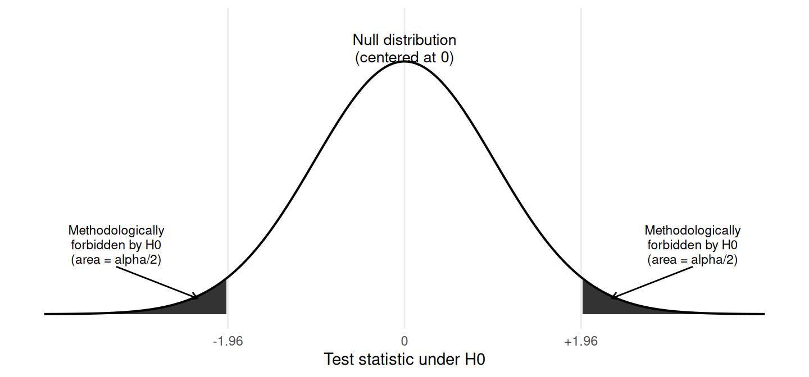
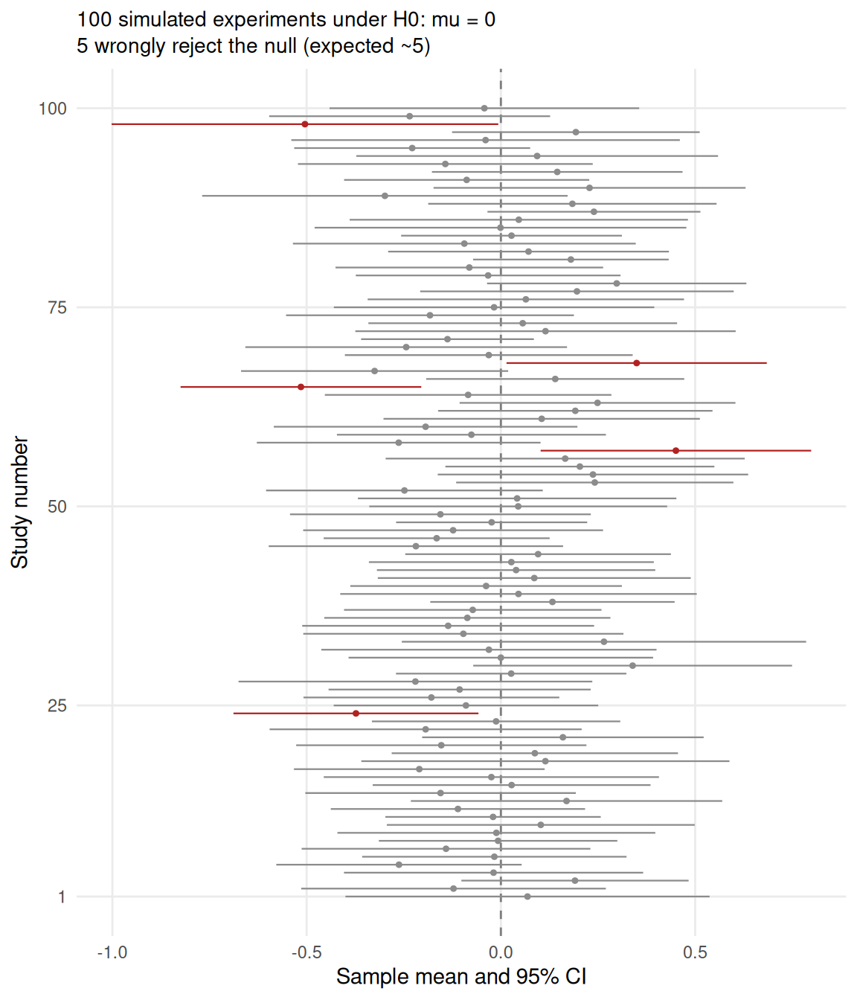
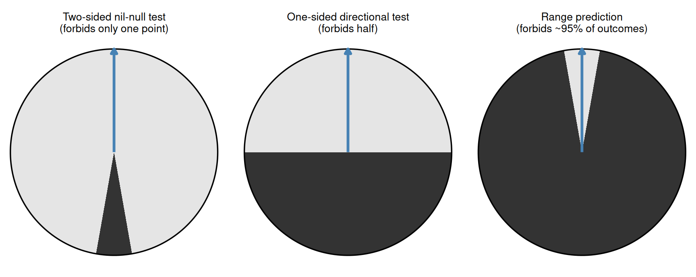
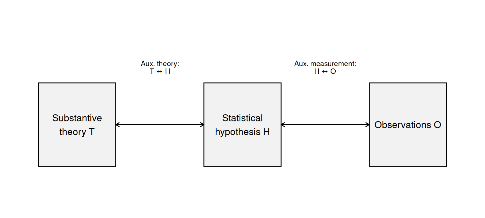

26 The philosophy of Neyman-Pearson: falsification, severity, and risky predictions
The previous five chapters built up the machinery of the Neyman-Pearson framework: sampling distributions and standard errors (Chapter 21), the philosophical division between Fisher’s evidential p-value and Neyman-Pearson’s calibrated decision procedure (Chapter 22), the inferential machinery of test statistics and degrees of freedom (Chapter 23), errors, power, and the SESOI (Chapter 24), and the two-role distinction together with multiple testing and pre-registration (Chapter 25). We have, by this point, an extensive working knowledge of how Neyman-Pearson inference operates in practice.
This chapter steps back and asks a different question. Why is Neyman-Pearson built the way it is? What philosophical assumptions force the framework to look like a procedure for behavioral decisions with controlled long-run error rates rather than, say, a procedure for updating beliefs or a procedure for measuring evidence? And how does that philosophical grounding shape what counts as good practice in research?
This is a conceptual chapter. There is no new R code. The aim is to develop the reasoning that makes the Neyman-Pearson framework hang together, and then to use that reasoning to think more carefully about what makes a hypothesis test worth doing in the first place. The chapter draws on Dienes (2008, Chapter 3), Lakens (2022, Chapter 5), Mayo (2018), Meehl (1967, 1990), Popper (1959), Lakatos (1978), Hempel (1966), and Royall (1997).
The chapter has six substantive sections. We start with the philosophy of probability that underwrites the framework. We then examine how Neyman-Pearson connects to Karl Popper’s idea of falsification, develop the related idea of severe tests from Deborah Mayo, work through the idea of risky predictions and what it implies for how we set up hypothesis tests, distinguish what the statistical test really tests from the substantive theory we care about, and end with a preview of three alternative frameworks (Fisher and estimation, Bayesian inference, and likelihoodism) that take the gaps Neyman-Pearson leaves open as their starting point. Each of those three alternatives is the subject of one of the optional chapters that follow.
26.1 What is probability?
Every statistical framework rests on a particular interpretation of what a probability is. Two interpretations dominate the foundations of modern statistics, and the difference between them turns out to determine almost everything else.
The first interpretation is the objective long-run relative frequency view, developed in its modern form by Richard von Mises in 1928. A probability is a property of a class of events, not of an individual event. To say “the probability of heads on this coin is 0.5” is shorthand for the claim that, over an indefinitely large hypothetical collection of tosses produced by the same physical mechanism (the coin, the tossing arm, the wind), the proportion of heads converges to 0.5. The hypothetical collection is called the reference class or the collective. The probability lives in the world, not in the mind: it is what it is regardless of what anyone knows or believes.
A direct consequence of this interpretation is that single events do not have probabilities in any objective sense. The next coin toss is either heads or tails, full stop. The reference class has a probability of 0.5, but the individual toss is one event, not a collection. A second consequence is that hypotheses do not have probabilities. A hypothesis such as “the population mean blood pressure of patients given Drug A is 5 mmHg lower than the mean of those given placebo” is either true or false. It is not a collective. There is no reference class to which it belongs. As Dienes (2008, p. 58) puts it, on the objective view “probabilities are to be discovered by examining the world, not by reflecting on what we know or on how much we believe.”
The second interpretation is the subjective or personal view, which makes a probability a degree of belief. A statement of the form “I think there is a 70% probability the theory is true” is now a meaningful statement about your epistemic state. The subjective view will be developed in Chapter 28 when we look at Bayesian inference, which is the framework built on it.
Neyman and Pearson committed to the objective interpretation. That single commitment forces almost the entire structure of the framework you have been learning. If probabilities apply only to collectives, then a statement like “this hypothesis is 95% likely to be true” is not a meaningful statistical statement at all. What we can meaningfully say is: “If we apply this procedure indefinitely, in the long run we will reach the wrong conclusion no more than 5% of the time when the null is true.” That is a statement about the long-run behavior of a procedure (a collective), not about the truth of a hypothesis (a single event). Everything that follows in the Neyman-Pearson framework, the fixed α level set in advance, the procedural rather than evidential interpretation of p-values, the dependence on stopping rules and on what other tests could have been run, the resolutely behavioral language of “accept” and “reject” rather than “believe more” or “believe less”, flows from this one foundational choice.
This is why, as we saw in Chapter 22, the p-value in the Neyman-Pearson framework is not the probability that the null hypothesis is true, not the probability that the result is due to chance, and not a measure of how strongly the data favor the alternative. It cannot be any of those things because hypotheses do not have probabilities in the first place. The p-value is the probability of obtaining a test statistic at least as extreme as the one observed, computed under the assumption that the null is true. It is one ingredient in a calibrated procedure, no more.
26.2 Inference as inductive behavior
The objective probability commitment leads directly to a particular philosophy of what statistical inference does. According to Neyman, statistical inference is not the process of strengthening beliefs in hypotheses. It is the process of choosing actions that, in the long run, will not lead us astray too often. He gave it a deliberately unflattering name: inductive behavior. The phrase emphasizes that the framework licenses behavior (you act as if the null is rejected, or you act as if it is not rejected), not knowledge claims (you do not become more confident in any hypothesis).
The contrast with Fisher (recall Chapter 22) is fundamental. Fisher wanted the p-value to carry a continuous, evidential message: the smaller the p-value, the stronger the reason to doubt the null. For Fisher, p = 0.0001 reflected more evidence against the null than p = 0.04, and p = 0.04 more than p = 0.06: the p-value was a continuous gauge of how much the data weighed against the null, with smaller values pulling more heavily. The familiar but problematic categorical reading in which p = 0.04 is “weakly significant” and p = 0.06 is “marginally suggestive” is not Fisher’s view as such, but a later hybrid that grafts the binary decision criterion of Neyman-Pearson onto Fisher’s continuous reading. To Neyman, even Fisher’s continuous reading was incoherent. If you committed in advance to α = 0.05, then p = 0.0001 and p = 0.04 are both simply “reject the null hypothesis”, and p = 0.06 is “do not reject the null hypothesis”; they do not differ in evidential weight because the procedure does not produce evidence at all, only decisions.
Dienes (2008, p. 70) summarizes this with a quote that captures the strict Neyman-Pearson attitude: “The Neyman-Pearson approach urges you to engage in a certain behavior: whatever your beliefs or degree of confidence, act as if you accept the null when the test statistic is outside the rejection region, and act as if you reject it if it is in the rejection region. Amazingly, the statistics tell you nothing about how confident you should be in a hypothesis nor what strength of evidence there is for different hypotheses.”
Fisher found this philosophy irrelevant to actual scientific reasoning and never accepted it. Many practicing researchers, even today, find the behavioral-decision framing weird. According to him, the intuitive thing to want from a statistical analysis is a probability, a degree of confidence, a measure of evidence. The Neyman-Pearson approach does not provide any of these, and this restraint is principled. It is the consequence of taking the objective interpretation of probability seriously. If you want statistics to tell you how confident to be, then you are asking for something the Neyman-Pearson approach is not designed to give, and you should look at Bayesian inference (Chapter 28). If you want statistics to tell you how strongly the data support one hypothesis over another, you should look at likelihoodism (Chapter 29). The Neyman-Pearson approach does one thing: it provides a calibrated procedure whose long-run error rates are bounded.
Behind this restraint lies a particular philosophical stance, one that Neyman and Pearson shared with the logical positivists of the 1920s and 1930s and that was crystallized most forcefully by Karl Popper. The stance can be stated quickly: scientific knowledge is never absolute, never final, never proven. What science gives us is a structure of tentative claims that have so far survived attempts at refutation. Truth in any final, mind-independent sense lies somewhere beyond what science can directly access. From inside this stance, statistical inference cannot deliver belief or proof, because both would presuppose access to absolute truth that we do not have. What statistical inference can deliver is a procedure for making decisions whose error rates we know and can keep within tolerable bounds. The next section develops this stance carefully, because it is what provides the deeper rationale for why Neyman and Pearson built the framework the way they did.
This is the framework’s strength, and it is also why everything in the framework depends so tightly on the procedure being fully specified in advance (recall Chapter 25). The calibration claim attaches to the procedure, not to the data; if the procedure is ambiguous, undefined, or modified in light of the data, the calibration evaporates and no inference remains.
26.3 Falsification and probabilistic theories
The Neyman-Pearson framework solves a specific problem. It is the technical answer to a more general philosophical question: how can a probabilistic claim ever be tested against data? Without a careful procedural answer, probabilistic claims look unfalsifiable in any meaningful sense, and unfalsifiable claims, on a long tradition in philosophy of science, are not scientific claims at all.
This tradition is most closely associated with Karl Popper, whose 1934 book Logik der Forschung (translated into English in 1959 as The Logic of Scientific Discovery) argued that science advances not by accumulating positive confirmations but by surviving attempts at refutation. A scientific theory, on Popper’s view, must forbid certain observable states of affairs. If the forbidden states are observed, the theory is falsified. If they are not observed, the theory is corroborated: not proven, but allowed to stand for the time being. Corroboration is therefore a much weaker notion than verification, and it never accumulates into certainty. A theory that has been corroborated many times is a theory we are entitled to keep using; it is not a theory we have proven true.
This view has practical implications for how research is supposed to work. If the goal is corroboration through survival of refutation attempts, then a study is most informative when it gives a theory a real chance of failing. Confirming a prediction the theory was bound to make anyway tells us very little; confirming a prediction the theory could easily have gotten wrong tells us much more. We will return to this idea in the next two sections, on severe tests and risky predictions.
26.3.1 Three versions of falsificationism
Lakens (2022, section 5.6), following Lakatos, distinguishes three versions of falsificationism that are sometimes conflated. The differences matter because the simple version (“data falsify theories”) is widely thought to be Popper’s view, but it was the view Popper and Lakatos actually opposed.
Dogmatic falsificationism holds that the world hands us pure observational facts that can decisively refute theories. The classic illustration is the swan example. The theory “all swans are white” is universal: it claims that wherever and whenever you look, every swan you find will be white. By the rules of basic logic, observing a single black swan refutes the theory; one counterexample is sufficient. Dogmatic falsificationism takes this picture literally and treats the observation, “a black swan”, as a brute fact that can do the refuting on its own.
The trouble is that observations are never brute facts. When we report seeing “a black swan”, we rely on background theories about which bird species count as swans, about how light interacts with feathers, about which lighting conditions make a color reading reliable, about whether our eyes and brain are functioning normally. None of these assumptions is itself observed; each is itself theoretical. Lakatos (1978, p. 13) put the criticism succinctly: “there are and can be no sensations unimpregnated by expectation and therefore there is no natural (i.e. psychological) demarcation between observational and theoretical propositions.” Pure facts that could refute theories without any theoretical mediation simply do not exist.
Naive methodological falsificationism is the first attempt to fix this. It accepts that all observations are theory-laden, but proposes that we can agree, by methodological convention, to treat certain reports as “unproblematic” for the purpose of testing a specific theory. Consider a thermometer reading in a chemistry lab. The reading depends on theories of thermodynamics, on the calibration of the instrument, and on the operator’s skill at reading the scale. None of this is in dispute when we test whether a particular chemical reaction produces heat: we agree, by convention, to treat the thermometer reading as a reliable observation. We are not claiming the convention is infallible. We are setting these assumptions aside in order to focus on the theory under test. If a later study finds a systematic calibration error in the thermometer, the convention can be revised. The same logic applies in psychology: we agree, by convention, to treat self-report scores on a validated questionnaire as observations of an underlying attitude or trait, even though we know the connection between the score and the underlying construct relies on a lot of measurement theory.
Sophisticated methodological falsificationism, the position Popper and Lakatos ultimately defended, takes a further step. A theory is not tested in isolation but compared with rival theories across a series of experiments. The replacement of Ptolemaic geocentrism by heliocentrism illustrates the pattern. Ptolemaic geocentrism was not abandoned the first time it produced an inaccurate prediction; for centuries, awkward predictions were absorbed by adding epicycles, smaller circles riding on the main circles, that could in principle bend the model to fit almost any observation. Heliocentrism replaced geocentrism only when (1) it predicted new phenomena that geocentrism did not predict, such as the phases of Venus and, eventually, stellar parallax; (2) it could explain why geocentrism had appeared to work so well for so long; and (3) some of its novel predictions were observationally confirmed. Falsification on this view is a long-term comparative process across research programs, not a one-shot collision between a theory and a fact.
26.3.2 From dogmatic falsification to NP: a worked example
This three-way distinction matters for statistics because almost all the theories we test in psychology are probabilistic. A probabilistic theory does not forbid any single observation outright, and that is exactly the gap that dogmatic falsificationism cannot cross.
Take the simplest possible probabilistic theory: “this coin is fair”, that is, P(heads) = 0.5. No finite sequence of outcomes can refute this theory strictly. Even observing 100 heads in 100 tosses is logically consistent with a fair coin; the fair-coin theory just assigns that sequence a very small probability (about 1 in 10²⁹). By the standards of dogmatic falsificationism, “this coin is fair” would not be a scientific claim, because no observation forbids it outright. That conclusion is plainly absurd: of course “this coin is fair” is a scientific claim, and of course we want a way to test it.
Lakatos’s escape, and Popper’s own escape in his methodological version, is to make probabilistic theories falsifiable “by specifying certain rejection rules which may render statistically interpreted evidence ‘inconsistent’ with the probabilistic theory” (Lakatos, 1978, p. 25). The idea is direct. We agree, by methodological convention, that observations whose probability under the theory falls below some threshold will be treated as inconsistent with the theory. With such a rule in place, the probabilistic theory becomes falsifiable in the methodological sense. We are not claiming that the rule is infallible; we are committing in advance to a calibration we know, and acting accordingly.
The Neyman-Pearson framework is precisely this kind of rule, raised to a general technical procedure. The decision rule “reject the null whenever the test statistic exceeds the critical value at α” just is an agreed-upon methodological convention that defines what observations will be treated as inconsistent with the null. The α level sets the long-run rate at which the rule will mistakenly declare a true null inconsistent with the data; this is the price of having a workable falsification rule for probabilistic theories. There is no way to do methodological falsification of probabilistic claims without paying some such price.
The figure below makes this concrete using our running example. Suppose we want to test the null hypothesis that the population mean difference in aggression between the violent and neutral conditions of vgames_study is exactly zero. Strictly, any observed sample difference is consistent with the null, because sampling noise can produce any value. So nothing strictly refutes the null. But we can agree to treat observations that produce a t-statistic in the top or bottom 2.5% of the null distribution as inconsistent with the null. The grey curve is the null distribution of the t-statistic; the dark shaded tails are the region we agree to treat as inconsistent with the null.
The two dark tails are not strict refutations. A true null can produce a sample mean far enough from zero to land in the dark region; it just happens rarely, with total probability α = 0.05. We have agreed in advance to treat those rare outcomes as inconsistent with the null. The 5% wrongful-rejection rate is the calibration we accept as the cost of having a rule.
This is what Popper and Lakatos’s methodological move looks like in statistical practice. The probabilistic claim “the population mean difference is exactly zero” has been made methodologically falsifiable: there is now a clear, pre-specified region of possible observations that will count as falsifying it, and we know the long-run rate at which the rule will get this wrong even when the null is true. The framework that lets us do this is the Neyman-Pearson framework.
26.3.3 Piles in the swamp
A famous passage from Popper expresses the spirit of this whole enterprise (Popper, 2002, p. 94):
Science does not rest upon solid bedrock. The bold structure of its theories rises, as it were, above a swamp. It is like a building erected on piles. The piles are driven down from above into the swamp, but not down to any natural or ‘given’ base; and if we stop driving the piles deeper, it is not because we have reached firm ground. We simply stop when we are satisfied that the piles are firm enough to carry the structure, at least for the time being.
The image is worth unpacking carefully because it is doing a lot of philosophical work. The swamp is the underlying truth, which we never directly access. The piles are the methodological commitments we make, knowing they are not bedrock. The structure is the body of provisional scientific claims we build on top of the piles. The piles are not the truth, and they are not even certainties; they are firm-enough conventions that let us build, and that can be revised if later inquiry requires it.
The methodological rules of Neyman-Pearson, the fixed α, the pre-specified procedure, the bounded error rates, are exactly these piles. They do not deliver certainty. They are themselves conventions, calibrated to long-run behavior, never reaching the swamp’s hidden bottom. They deliver a structure on which we can build provisional knowledge, knowing in advance what rate of error we are willing to accept.
A few concrete examples make the metaphor less abstract.
Clinical drug approval. A regulator runs a randomized controlled trial of a new antihypertensive with α = 0.05 and 80% power to detect a clinically meaningful blood pressure reduction. If the trial yields a statistically significant improvement, the regulator approves the drug. The regulator is not claiming “we now know the drug works.” The regulator is saying “we have driven a calibrated pile into the swamp: if we applied this procedure across infinitely many such trials, we would wrongly approve an ineffective drug at most 5% of the time and would correctly detect a real clinically meaningful effect 80% of the time.” On that pile, society builds a structure: doctors prescribe the drug, patients use it, post-market surveillance accumulates, further trials run. The structure stands as long as further studies do not undermine the pile.
A research literature on violent video games and aggression. The empirical question that motivates our vgames_study example is not a single pile but many. Each study contributes its own NP procedure with its own α, its own design, its own auxiliary measurement assumptions. The body of literature taken together builds a tentative structure of claims, for instance, “there appears to be a small positive association between violent gameplay and short-term aggression measures in laboratory settings.” This structure is not bedrock. It is provisional knowledge, supported by piles whose calibration we know. New evidence might shift it. Meta-analyses can revise it. But while the piles hold, the structure is enough to inform theory, policy, and the next round of research.
An individual decision. Even a single statistical test in a single thesis chapter is, in miniature, a pile driven into the swamp. The student pre-specifies a procedure with chosen α and (ideally) chosen power. The test produces a verdict: reject or not. The student writes up a provisional claim. Whether the verdict reflects the actual truth, no one knows. What is known is the rate at which the procedure would be wrong in the long run. That is enough to build on for the next study.
The figure below shows what the long-run calibration of a Neyman-Pearson procedure looks like in practice. It plots 100 simulated experiments in which we ran a one-sample t-test on a sample of 30 observations drawn from a population with mean exactly 0 (so the null hypothesis is in fact true). For each experiment, the dot is the sample mean and the horizontal line is the 95% confidence interval. By the duality between two-sided NP tests and 95% CIs (see Chapter 22), an experiment “rejects the null” whenever its CI does not contain zero. We have highlighted those wrongful rejections in dark red.

Each of these 100 experiments is a separate “pile”. None of them has reached the truth on its own; we have built in a fixed long-run rate of wrongful rejection. The figure makes that rate visible: across the 100 experiments, the procedure rejected the null about 5 times, exactly as α = 0.05 implies. We did not know which individual experiments would do so. We did know the rate. That is the operational meaning of “the piles are firm enough to carry the structure, at least for the time being.” We act on each individual result not because the result is the truth, but because we have committed in advance to a calibration we are willing to live with.
26.4 Severe tests
Falsification is the negative side of the picture: a theory must be falsifiable to be scientific. The positive side asks when a theory that has not been falsified should be taken seriously. Deborah Mayo (2018) articulated this with the concept of a severe test:
A claim is severely tested to the extent it has been subjected to and passed a test that probably would have found flaws, were they present.
Severity is a property of the test, not of the result. A test that passes a hypothesis only weakly tells you very little, even if the hypothesis is true. A test that would have probably caught a flaw, had one existed, tells you something substantial when it fails to catch any flaw. Pass a severe test, and the hypothesis has been corroborated in a meaningful sense. Pass an insevere test, and the result is, to use Mayo’s phrase, Bad Evidence, No Test (BENT).
A vivid illustration comes from Meehl (1990):
A theory is corroborated to the extent that we have subjected it to such risky tests; the more dangerous tests it has survived, the better corroborated it is. If I tell you that Meehl’s theory of climate predicts that it will rain sometime next April, and this turns out to be the case, you will not be much impressed with my “predictive success.” Nor will you be impressed if I predict more rain in April than in May, even showing three asterisks (for p < .001) in my t-test table. If I predict from my theory that it will rain on 7 of the 30 days of April, and it rains on exactly 7, you might perk up your ears a bit, but still you would be inclined to think of this as a “lucky coincidence.” But suppose that I specify which 7 days in April it will rain and ring the bell; then you will start getting seriously interested in Meehl’s meteorological conjectures.
The point is that “the theory predicted something that happened” can mean very different things depending on how risky the prediction was. A non-risky prediction passing a non-severe test is not evidence for the theory, even when the prediction came out right.
For our purposes, the severity concept also clarifies what statistical power really is. As you saw in Chapter 24, power is the probability of detecting an effect of a specified size if one exists. From a severity standpoint, power is the probability that the test would have caught the flaw (a real effect) had one been present. A test with high power is severe with respect to the alternative; a test with low power is not. This is why an underpowered null result tells you almost nothing: the test was not capable of catching the effect if it had been there, so the absence of a significant result is uninformative. We already saw this point in Chapter 24 in connection with the SESOI; the severity framework gives it a name and a philosophical home.
The severity concept also lets us re-describe several failure modes from the previous chapters in a single language.
HARKing, which we introduced in Chapter 25, is severity-destroying because the test was guaranteed to corroborate whatever hypothesis the researcher chose to write up. There is no way the test could have falsified the hypothesis, so passing it provides no information.
P-hacking, the practice of trying many analyses until one is significant, destroys severity for the same reason. The procedure that actually produced the reported result was “try many things until one works,” and that procedure is almost certain to produce a significant result whether or not any real effect exists. The test cannot catch the flaw because the procedure is not designed to catch flaws at all.
Underpowered confirmatory studies destroy severity in a different way: the procedure is honest and pre-specified, but the test simply was not capable of detecting the effect even if the effect was real. A “non-significant” result from such a study does not corroborate the null; it tells us only that the test was too weak to discriminate.
The role separation from Chapter 25 (the analyst exploring vs the claim-maker committing) maps neatly onto severity as well. An exploratory analyst is not trying to subject a specific claim to a severe test; she is trying to find patterns in the data that might later be subjected to a severe test in a confirmatory follow-up. The exploratory result, on its own, has not been severely tested and should not be treated as corroborated, regardless of how small the p-value attached to it happens to be.
26.5 Risky predictions
The severity idea applies most powerfully when we think about which predictions a theory makes. A theory that forbids almost nothing can hardly be corroborated even when its predictions come true, because almost any data would have agreed. A theory that forbids a great deal is corroborated meaningfully when its narrow predictions are confirmed, because most data would have disconfirmed them. Lakens (2022, section 5.8) develops this idea with a useful visual metaphor: the circles of falsifiability. Each circle represents all possible outcomes of a study; the dark area is the region of outcomes the theory says cannot happen; the light area is the region of outcomes that count as corroborating the theory. The data point we actually observe lands somewhere on the circle, and whether that point falls in the light or the dark area determines whether the theory passes the test.
The figure below recreates the three circles for our running example. Imagine we ran a study on vgames_study looking at the difference in mean aggression between the violent and neutral conditions. Three theories make three different predictions: the first predicts that the difference is not exactly zero (a standard two-sided nil-null test), the second predicts the difference is positive (a directional one-sided test), the third predicts the difference falls in a specific narrow band around 1.3 (a range prediction).

In each circle the dark region is what the theory says cannot happen, and the light region is what it says can. The blue arrow is the observed data point, landing in the light region in all three cases. So in all three cases the prediction is corroborated. But the three corroborations are not equally informative.
The leftmost circle is the standard two-sided nil-null test. The theory (“the population mean difference is not exactly zero”) forbids only one point on the entire continuum of possible outcomes. Any non-zero difference, in either direction and of any magnitude, counts as corroboration. The test is almost guaranteed to pass: the dark region is vanishingly small, so almost any data would have landed in the light region. The theory has not been severely tested.
The middle circle is a one-sided directional test. The theory (“the population mean difference is positive”) forbids half the continuum (all negative differences and zero). The data have a 50% prior chance of landing in the dark region by sheer noise, so corroboration here is a bit more informative than the two-sided test.
The rightmost circle is a range prediction. The theory predicts the population mean difference falls in a specific band, say between 1.1 and 1.5 on the aggression scale. Roughly 95% of plausible outcomes lie outside that band, so the test is severe: most data would have falsified the prediction, but ours did not. This is the kind of test Meehl points to when he contrasts psychology with physics. Physicists routinely make point predictions of the form “the force will be 13 units down”; the test is severe because almost any data, given the precision of measurement, would have refuted the point. Psychologists more commonly state hypotheses of the form “there will be a difference between conditions,” which is the leftmost circle, the weakest possible directional commitment.
This is the connection between severe tests and what Meehl (1967) called weak theorizing. The nil-null test is so easy to pass that any “soft” theory that predicts almost nothing specific can keep accumulating “corroborations” indefinitely. Recall from Chapter 22 the long list of psychological theories that yield apparent confirmations but never seem to settle into established knowledge; weak theorizing combined with weak hypothesis tests is a key driver of that pattern.
Dienes (2008), drawing on Meehl, puts the consequence sharply: most point null hypotheses (“there is no effect” or “the correlation is exactly zero”) are virtually certain to be false. The question is not whether some effect exists, but how big it is and whether it falls within the range that the substantive theory predicts. A good theory predicts the size of an effect, not just that it differs from zero. As Meehl noted, this is a methodological maxim that should encourage researchers to develop more precise theories where they can.
Chapter 24 already introduced two tools that make range predictions and severe tests possible: the SESOI, which lets you commit in advance to a smallest effect worth detecting, and the equivalence test, which lets you reject not-zero effects whose magnitude is smaller than the SESOI. Combined, they let you turn the rightmost circle from an abstract picture into a concrete statistical procedure. If you predict that the violent vs neutral aggression difference falls in the band [1.1, 1.5], you can perform an equivalence test against those bounds; if the data corroborate the prediction, you have passed a severe test.
There is a final practical observation. Lakens (2022, section 5.8) notes that Meehl himself did not reject nil-null tests outright. There are stages of research in which we genuinely do not yet know enough to specify a range prediction, and the question “is there any effect of meditation on mood?” is a sensible early-stage question. The nil-null test is appropriate when both candidate models, “no effect” and “some effect,” have non-trivial plausibility. As theories mature, the burden should shift toward more precise predictions and more severe tests.
26.6 What is your test really testing?
So far we have treated “the hypothesis” and “the statistical hypothesis” as if they were the same thing. They are not. A statistical hypothesis is a precise mathematical statement about a population parameter; a substantive theory is a much richer claim about psychological or behavioral mechanisms. The two are connected only through a chain of auxiliary assumptions about measurement, design, sampling, and inference. Meehl (1990) drew the distinction explicitly with the following structure, illustrated below.

The Neyman-Pearson test operates only on the link between the statistical hypothesis H and the observations O. It tells you, in long-run frequency terms, how often a procedure mapping observations to decisions about H will reach the wrong decision. It is silent on whether H is the right statistical translation of the substantive theory T. The link from T to H is carried by auxiliary hypotheses: that the measurement instrument captures the construct of interest, that the manipulation actually produces the intended psychological state, that the participants are sampled from the population the theory is about, that confounders are controlled, that statistical assumptions (normality, independence, equal variances) hold well enough to interpret the test output.
We already met the auxiliary-hypothesis problem in Chapter 22, where we cited Hempel (1966) and the Duhem-Quine problem: a failed prediction can always in principle be blamed on the auxiliaries rather than on the theory itself. The same problem flows in the other direction. A successful prediction can be a successful test of the theory, but it can also be a successful test of the auxiliaries. If your manipulation didn’t work but your measure happens to be sensitive to a confound, you can get a “significant” result that reflects the confound rather than the theoretical mechanism.
The practical upshot is that a statistically significant rejection of H₀ is not the same as a corroboration of the substantive theory T, and conversely a non-rejection of H₀ is not the same as a refutation of T. The statistical machinery delivers a verdict about H given O; what that verdict means for T depends on the strength of the chain of auxiliary assumptions.
This connects to a further point raised by Meehl and developed by Lakens (2022, section 5.9). Sometimes the question we think the statistical test is answering is not the question the test actually answers. A null hypothesis test answers the question: given a pre-specified procedure, should we act as if the null is true or as if it is false, accepting some calibrated rate of error? It does not answer the question: what do I now believe about the substantive theory? It does not answer: how strong is the evidence that mechanism M is operating? It does not answer: what is the most likely value of the effect? If these are the questions you want to answer, you need a different statistical framework.
One additional consideration belongs here. In many areas of psychology, the nil-null hypothesis (“there is exactly zero population difference”) is implausible on its face. Meehl (1978, section 5.11 in Lakens) coined the term crud factor to capture this. In any non-experimental study where variables are connected through a complex causal structure, “everything is correlated with everything.” Men are on average taller than women; height has tiny systematic effects on countless other behaviors; therefore the nil-null hypothesis of zero gender difference on most behavioral measures is almost certainly false at sufficient resolution. The question “is the effect exactly zero?” is, in such settings, uninteresting. The interesting question is whether the effect is large enough to matter, which again points toward range predictions, equivalence testing, and the SESOI rather than nil-null testing.
The takeaway is twofold. First, even within the Neyman-Pearson framework, “rejecting the null” is not automatically a corroboration of your substantive theory; it is at most a step in the long chain that connects observations to theoretical claims. Second, when the nil-null is implausible a priori, the standard test is the wrong question to ask, and the framework has tools (equivalence tests, minimum-effect tests) that let you ask a more interesting one.
26.7 Where Neyman-Pearson is silent: three alternatives
We can now state, in light of the philosophy we have just developed, three specific things that the Neyman-Pearson framework deliberately does not provide. These three gaps motivate the three optional chapters that follow.
First, Neyman-Pearson does not measure evidence. A small p-value is not strong evidence; a large p-value is not weak evidence. The p-value is one input to a binary decision procedure, calibrated for long-run error rates, and the philosophy of objective probability prohibits any evidential reading of the number. If you want a measure of how strongly the data support one hypothesis over another, you need a framework built around the likelihood. Chapter 29 introduces likelihoodism, originally developed from Fisher’s likelihood concept and articulated as a coherent inferential framework by Royall (1997).
Second, Neyman-Pearson does not give you belief. A 95% confidence interval is not a 95% probability interval for the parameter (we made this point already in Chapter 22). The procedure has a 95% long-run capture rate, but no individual interval has a 95% probability of containing the parameter, because parameters do not have probabilities under the objective interpretation. If you want a framework that does assign probabilities to hypotheses, that lets you say “given the data, I am now 95% confident the effect lies between these values,” you need the Bayesian framework. Chapter 28 introduces the basics: subjective probability, the prior, the posterior, credibility intervals, and Bayes factors.
Third, Neyman-Pearson does not directly give you estimates with uncertainty. The framework is built around decisions, not around the description of effect sizes. Neyman himself developed the confidence interval as a tool within the framework, and we have used it throughout these chapters, but the focus has been on dichotomous decisions (reject or not) rather than on estimation as the primary output. A separate intellectual tradition, growing out of Fisher’s work on estimation and developed by Cumming (2014) and others as the new statistics, treats the effect size and its confidence interval as the primary product of any analysis, with NHST de-emphasized or removed entirely. Chapter 27 introduces this approach, including its motivations, its tools (effect sizes, confidence intervals, precision-for-planning, meta-analysis), and its philosophical and epistemological weaknesses.
The three optional chapters do not replace what we have built in Section 4. The Neyman-Pearson framework is the lingua franca of statistical practice in psychology and most of the empirical sciences, and competent reading of the literature requires you to understand it well. The optional chapters give you the conceptual vocabulary to recognize, when the question you want to answer is not “should I act as if the null is rejected, with calibrated error rates”, what other framework might be the right tool for the question you actually have.
It is worth ending this chapter with the formulation from Royall (1997, p. 4), which neatly organizes what each framework is for. Royall distinguished three questions one could ask in the light of data:
- What should I do now? This is the Neyman-Pearson question. The answer is a decision rule with calibrated long-run error rates.
- What should I believe now? This is the Bayesian question. The answer is a posterior probability or credibility interval.
- How should I treat these data as evidence for one hypothesis rather than another? This is the likelihoodist question. The answer is a likelihood ratio.
These three questions are genuinely different, and they sometimes give different answers from the same data, as we will see in detail in the chapters that follow. The mistake is to assume that any one of them is “the” statistical question. The right question depends on what you are trying to do with the data: act, believe, or assess evidence. The right framework follows from the right question.
26.8 Check your understanding
1. Which of the following best describes the philosophy of probability on which the Neyman-Pearson framework is built?
2. According to Mayo’s notion of severity, what does it mean for a hypothesis to have been severely tested?
3. Which of the following best illustrates what Popper, Lakatos, and Meehl would consider a risky (and therefore severe) test of a theoretical prediction?
4. A researcher runs a study with low statistical power and reports a non-significant result. Why does this fail to provide a severe test of the null hypothesis?
5. Why is rejecting the null hypothesis H in a Neyman-Pearson test not the same as corroborating the substantive theory T from which H was derived?
6. Which of Royall’s three statistical questions does the Neyman-Pearson framework specifically aim to answer?
7. What does Meehl mean by “the crud factor” and why does it matter for the interpretation of nil-null hypothesis tests in non-experimental research?
26.9 References
Cumming, G. (2014). The new statistics: Why and how. Psychological Science, 25(1), 7-29. https://doi.org/10.1177/0956797613504966
Dienes, Z. (2008). Understanding psychology as a science: An introduction to scientific and statistical inference. Palgrave Macmillan.
Hempel, C. G. (1966). Philosophy of natural science. Prentice-Hall.
Lakatos, I. (1978). The methodology of scientific research programmes: Philosophical papers, Volume 1. Cambridge University Press. https://doi.org/10.1017/CBO9780511621123
Lakens, D. (2022). Improving your statistical inferences. https://lakens.github.io/statistical_inferences/
Mayo, D. G. (2018). Statistical inference as severe testing: How to get beyond the statistics wars. Cambridge University Press.
Meehl, P. E. (1967). Theory testing in psychology and physics: A methodological paradox. Philosophy of Science, 34(2), 103-115. https://doi.org/10.1086/288135
Meehl, P. E. (1990). Appraising and amending theories: The strategy of Lakatosian defense and two principles that warrant it. Psychological Inquiry, 1(2), 108-141. https://doi.org/10.1207/s15327965pli0102_1
Popper, K. R. (1959). The logic of scientific discovery. Hutchinson.
Popper, K. R. (2002). The logic of scientific discovery (Routledge Classics edition). Routledge. https://doi.org/10.4324/9780203994627
Royall, R. (1997). Statistical evidence: A likelihood paradigm. Chapman & Hall. https://doi.org/10.1201/9780203738665